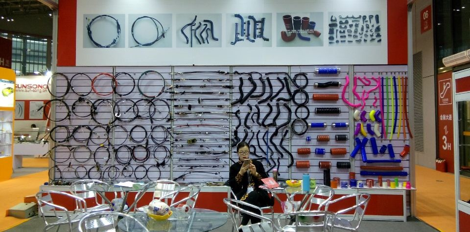

Sobre nosotros
En un mundo en constante evolución, la industria manufacturera busca soluciones que combinen durabilidad, versatilidad y seguridad. En ese contexto, Silicona Quality se destaca como una empresa líder en la producción de mangueras de silicona de alta calidad. Nuestra compañía ha establecido un sólido legado de excelencia en la fabricación de mangueras de silicona que cumplen y superan las expectativas de nuestros clientes. La silicona, un material excepcionalmente resistente y versátil, es el corazón de nuestro proceso de producción. Las mangueras de silicona ofrecen una serie de ventajas clave, como resistencia a altas temperaturas, aislamiento eléctrico, flexibilidad y durabilidad, lo que las convierte en una elección preferida en una amplia gama de aplicaciones.
